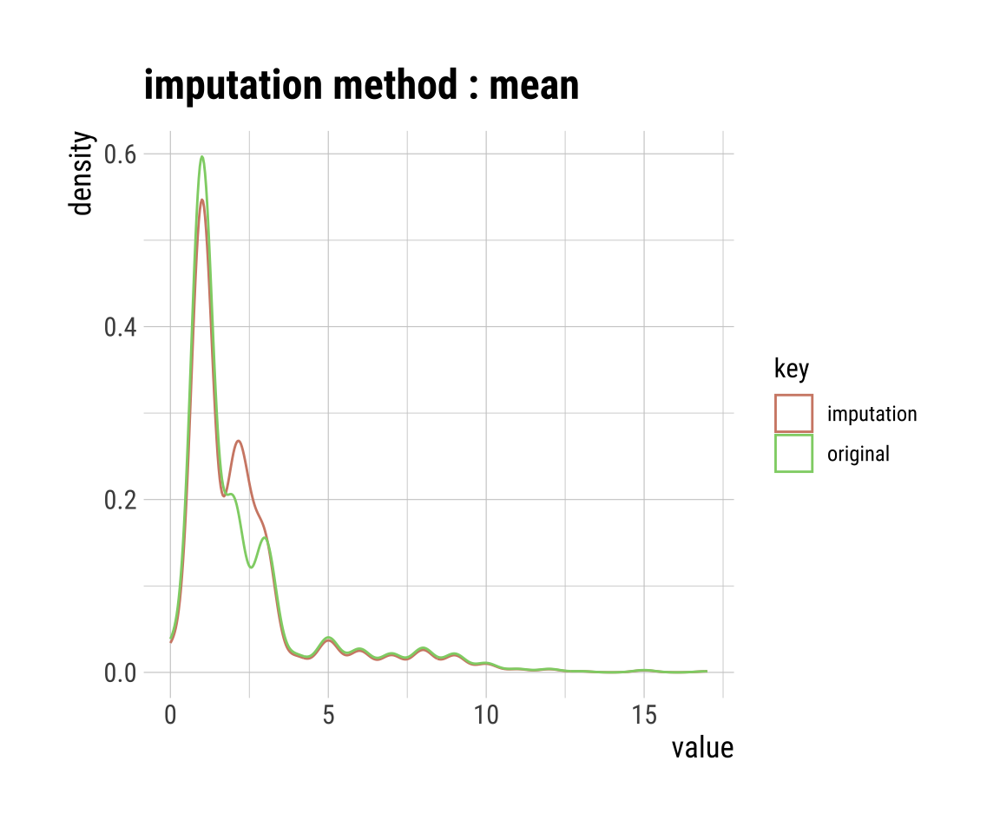

pacman::p_load(tidyverse, magrittr, see, readxl,
mice, naniar, missForest, missRanger,
dlookr, parameters, recipes)38 Imputation fehlender Werte
Version vom June 21, 2023 um 16:51:40
Einführung in die Imputation von fehlenden Werten per Video
Du findest auf YouTube Imputation von fehlenden Werten als Video Reihe. Ich werde zwar alles nochmal hier als Text aufschreiben, aber manchmal ist das Sehen und Hören dann einfacher.
Ein fehlender Wert wird in R als
NA (eng. not availabe) bezeichnet.Wann brauchen wir eigentlich die Imputation (deu. Ersetzung) von fehlenden Werten in unseren Daten? Zum einen brauchen wir die Imputation von fehlenden Werten, wenn wir eine multiple lineare Regression rechnen wollen. Wenn wir einen fehlenden Wert in einer Spalte haben, so fällt diese Beobachtung aus dem gesamten Modell heraus. Das heist, dass wir Fallzahl verlieren sobald wir fehlende Werte in den Daten haben. Tritt dies in einem geplanten Experiment auf? Das kommt darauf an. Wenn du selber die Daten erhebst, dann ist es eher unwahrscheinlich, du wirst vermutlich darauf achten möglichst alle Daten zu erheben. Meistens treten fehlende Werte bei sehr großen Datensätzen auf, die aus externen Quellen kommen. Werden diese Daten dann kombiniert, sieht die Fallzahl beeindruckend aus, aber wenn die Beobachtungen mit mindestens einem fehlenden Wert gelöscht werden, sind die Fallzahlen wieder ganz klein.
Wir imputieren nur \(x\) Werte und niemals das Outcome \(y\). Im Zweifel musst du schauen, dass du dir über
select() die einzelnen Datensätze zusammenbaust, die du imputieren willst.Zum anderen imputieren wir auch Datensätze, die wir später im Rahmen des maschinellen Lernen im Kapitel 54 benutzen wollen. Auch hier dürfen keine fehlenden Werte in den Daten auftreten. Da dies aber bei sehr großen Datensätzen, die zum Beispiel automatisch erstellt wurden, schnell passieren kann, brauchen wir eine Möglichkeit die fehlenden Werte zu ersetzen. Da wir eigentlich gar nicht an dem Modell an sich interesiert sind, sondern nur an der guten Vorhersage durch das Modell können wir hier auch Daten imputieren. Auch hier haben wir natürlich wieder eine große Anzahl an möglichen Verfahren. Ich werde hier die häufigsten Vorstellen und darüber diskutieren welche am besten passen würden. Wir immer kommt es auf den Kontext der Fragestellung an. Willst du eher ein exploratives Modell rechnen, dann kommt die Imputation von fehlenden Werten eher nicht für dich in Frage. Wenn du maschinelle Lernverfahren nutzt um Modelle zur Vorhersage zu bauen, dann ist die Imputation von fehlenden Werten eher nützlich für dich.
38.1 Was sind fehlende Werte?
Wir beschränken uns hier auf drei Arten von fehlenden Daten. Es gibt noch mehr Abstufungen, aber für den Einstieg reicht es, wenn wir nach drei Typen von fehlenden Daten unterscheiden. Die anderen Typen sind Mischtypen bzw. nicht so von Belang für die Anwendung.
- MCAR (eng. missing completely at random): völlig zufällig fehlende Daten. Dies ist das wünschenswerte Szenario im Falle fehlender Daten. Fehlende Werte werden als missing completely at random bezeichnet, wenn die Wahrscheinlichkeit für das Fehlen eines Wertes weder von erfassten noch unerfassten Merkmalen abhängt. Daher kann man sagen, dass MCAR-Werte die Fallzahl reduzieren, aber das Studienergebnis nicht verzerren.
- MAR (eng. missing at random): Fehlende Werte werden als missing at random bezeichnet, wenn die Wahrscheinlichkeit für das Fehlen eines Wertes von einem anderen Merkmal abhängt aber nicht von der Ausprägung des fehlenden Merkmals selbst. MAR-Werte reduzieren die Fallzahl und verzerren möglicherweise das Studienergebnis.
- MNAR (eng. missing not at random): nicht zufällig fehlende Daten. Fehlende, nicht zufällige Daten sind ein schwerwiegenderes Problem, und in diesem Fall kann es ratsam sein, den Datenerhebungsprozess weiter zu überprüfen und zu versuchen zu verstehen, warum die Informationen fehlen. Wenn zum Beispiel die meisten Teilnehmer einer Umfrage eine bestimmte Frage nicht beantwortet haben, warum haben sie das getan? War die Frage unklar? Daher werden fehlende Werte als missing not at random bezeichnet, wenn die Wahrscheinlichkeit für das Fehlen eines Wertes von der Ausprägung des fehlenden Merkmals selbst abhängt. MNAR-Werte reduzieren die Fallzahl und verzerren das Studienergebnis. MNAR sind Non-ignorable missings und müssen auch berichtet werden.
Wie schon angemerkt. Die Struktur der fehlenden Werte lässt sich meist schwer vorhersagen bzw. bestimmen. Wir müssen eine Annahme treffen und diese dann auch in unseren statistischen Berichte oder Abschlussarbeit niederschreiben. Es gibt dann häufig auch Mischformen: MCAR, MAR, MNAR können ineinander verwoben sein. Häufig glauben wir daran, dass unsere Daten der MCAR genügen. Unter der Annahme, dass es sich bei den Daten um MCAR handelt, können auch zu viele fehlende Daten ein Problem darstellen. In der Regel liegt die sichere Obergrenze bei großen Datensätzen bei 5% der Gesamtmenge. Wenn die fehlenden Daten für ein bestimmtes Merkmal oder eine Stichprobe mehr als 5% betragen, sollten Sie dieses Merkmal oder diese Stichprobe wahrscheinlich weglassen. Wir prüfen daher im folgenden Abschnitten, ob in den Merkmalen (Spalten) und Stichproben (Zeilen) mehr als 5% der Daten fehlen. Auch hier gibt es dann Möglichkeiten erstmal die Daten zu visualiseren und dann zu schauen, welches Verfahren zur Imputation geeignet ist.
Sensitivitätsanalysen nach der Imputation von fehlenden Werten
Nachdem wir neue Daten bzw. Beobachtungen in unseren Daten erschaffen haben, ist es üblich noch eine Sensitivitätsanalysen durchzuführen. Wir Vergleich dann die Imputation mit der complete-case Analyse. Oder wir wollen die Frage beantworten, was hat eigentlich meine Imputation am Ergebnis geändert? Das machen wir dann gesammelt in dem Kapitel 39 zu den Sensitivitätsanalysen.
38.2 Univariat vs. multivariate Imputation
Was soll jetzt an dieser Stelle univariat und multivariat bedeuten? Wir haben uns die beiden Begriffe aufgehoben und nutzen diese Begriffe hier in dem Kontext der Imputation. Wir sprechen von einer univariaten Imputation, wenn wir nur eine Variable \(x\) imputieren. Das heist, wir ignorieren die Zusammehänge der Variable \(x\) zu irgendwelchen anderen Variablen in dem Datensatz. Das macht zum Beispiel für die Körpergröße in unserem Gummibärchendatensatz nicht so viel Sinn, denn wir haben ja Frauen und Männer befragt. Wir müssen die Körpergröße getrennt für die Variable Geschlecht imputieren. Wenn wir also Variablen mit Bezug zu anderen Variablen imputieren, dann nennen wir diese Verfahren multivariate Imputationsverfahren. In den folgenden Abschnitten werde ich einnmal die gängisten univariaten Verfahren vorstellen und zwei sehr gut funktionierende multivariate Verfahren.
38.3 Genutzte R Pakete für das Kapitel
Wir wollen folgende R Pakete in diesem Kapitel nutzen.
Am Ende des Kapitels findest du nochmal den gesamten R Code in einem Rutsch zum selber durchführen oder aber kopieren.
38.4 Daten
In diesem Kapitel nutzen wir zwei Datensätze. Zum einen den echten Datensatz mit den Gummibärchen aus dem Kapitel 7 und dem Datensatz zu dem Infketionsstatus von Ferkeln aus dem Kapitel 8.1. Der Ferkeldatzensatz hat keine fehlenden Werte und deshlab müssen wir da noch einmal nachhelfen und künstlich fehlende Werte erschaffen. Schauen wir uns nochmal den Gummibärchendatensatz an und wählen nur die Spalten gender, age, height, semester, count_bears, count_color und most_liked. Die anderen Spalten haben keine fehlenden Werte bzw. wenn eine Farbe der Bärchen nicht in der Tüte vorkam, dann war keine drin. Das sind dann keine fehlenden Werte.
gummi_tbl <- read_excel("data/gummibears.xlsx") %>%
select(gender, age, height, semester, count_bears, count_color,
most_liked) %>%
mutate(gender = as_factor(gender),
most_liked = as_factor(most_liked),
count_color = as_factor(count_color))Zum anderen laden wir nochmal den Ferkeldatensatz mit unseren \(n = 412\) Ferkeln.
pig_tbl <- read_excel("data/infected_pigs.xlsx") Wir haben haben aber in dem Ferkeldatensatz keine fehlenden Werte vorliegen. Deshalb nutzen wir die Funktion generateNA() aus dem R Paket missRanger. Wir können in der Funktion missRanger() angeben wieviel fehlende Werte global in dem Datensatz erschaffen werden sollen oder aber per Spalte. Wir erschaffen die fehlenden Werte bei der Spalte, denn die zehnte Spalte ist unser Outcome infected und da wollen wir ja keine fehlenden Werte imputieren. Fehlende Werte in der Outcomespalte bedeutet dann ja, dass die Beobachtung aus den Daten entfernt wird. Das brauchen wir aber hier nicht. Wie du sehen kannst erschaffen wir in jeder Spalte ein unterschiedliches Verhältnis von fehlenden Daten.
pig_miss_tbl <- pig_tbl %>%
generateNA(c(0.1, 0.15, 0.05, 0.3, 0.1, 0.05, 0.15, 0.01, 0.05, 0))Nun haben wir zwei Datensätze vorliegen an denen wir einmal schauen können, wie wir fehlende Daten imputieren können. Ein fehlender Wert wird in R als NA (eng. not availabe) bezeichnet.
38.5 Visualisierung von fehlenden Werten
Wie immer ist es sehr wichtig, sich die Struktur der fehlenden Daten einmal zu veranschaulichen. Wir nutzen dazu zwei drei Funktion aus zwei R Paketen. Zum einen die Funktion vis_miss() und gg_miss_upset() aus dem R Paket naniar sowie die Funktion plot_na_pareto() aus dem R Paket dlookr. Wir schauen uns mit den Funktionen einmal die Daten an und entscheiden, ob wir wirklich MCAR als Struktur der fehlenden Daten vorliegen haben.
Wie immer haben beide R Pakete noch eine Reihe von weiteren Funktionen zu bieten. Bei naniar sind es weitreichende Visualisierungen zu fehlenden Werten. Bei dlookr sind es eine ergiebige Auswahl an Funktionen zur Diagnose, Report und Explorative Datenanalyse.
Betrachten wir zunächst die Gummibärchendaten in der Abbildung 38.1. Zuerst sehen wir in Abbildung 38.1 (a), dass sich einige Blöcke in der Variable Semester gebildet haben. Das kann auf einen nicht zufälliges fehlenden der Daten deuten. Auch scheint die Angabe von dem Lieblingsgeschmack in den älteren Beobachtungen besser eingetragen worden zu sein. Trotzdem können wir hier auf ein reltiv zuflliges Fehlen der Daten tippen. Wir nehmen mit etwas Bauchschmerzen hier MCAR an und machen dann mit der Imputation weiter. Du könntest auch überlegen, alle fehlenden Wert zu entfernen. Es scheint, dass Beobachtungen häufig über Geschlecht, Alter, Körpergröße und Semester fehlen. Dieser Zusammenhang wird dann in Abbildung 38.1 (b) nochmal deutlich. Wir haben viele NA’s im Semester. Häufig sind dann diese fehlenden Werte aber auch gleichseitig mit fehlenden Werten in der Variable Körpergröße, Alter und Geschlecht verknüpft. In Abbildung 38.1 (c) sehen wir nochmal die Anteile an den fehlenden Werten pro Spalte.

vismiss()
gg_miss_upset()
plot_na_pareto() gibt auch eine Wertung wieder.Nachdem wir uns nun echte fehlende Werte in den Gummibärchendaten angesehen haben, wollen wir uns die zufällig erstellten fehlenden Daten in der Abbildung 38.2 einmal anschauen. In Abbildung 38.2 (a) sehen wir jetzt die zufällige Verteilung der fehlenden Werte nach der vorgegebenen Häufigkeit. Das passt dann auch gut zu der Abbildung 38.2 (c) in der wir die Anteile jeweils in absoluten und relativen Häufigkeiten sehen. Auch sind in Abbildung 38.2 (b) die Verbindungen der fehlenden Werte über die verschiedenen Variablen sehr zufällig. Wir haben kaum Blöcke von mehr als zwei Variablen, die gleichzeitig fehlen.

vismiss()gg_miss_upset()
plot_na_pareto() gibt auch eine Wertung wieder.Nachdem wir uns beide Datensätze nochmal in der Visualisierung der fehlenden Werte angeschaut haben, stellen wir natürlich fest, dass der Gummibärchendatensatz weniger zufällig fehlende Werte hat als der künstlich erschaffene Datensatz zu den Ferkeln. Dennoch wollen wir mit beiden Datensätzen einmal weitermachen und schauen, wie wir jetzt die fehlenden Werte oder auch NA’s in R imputieren können.
38.6 Univariate Imputation
Für die univariate Imputation von fehlenden Werten nutzen wir die Funktion impute_na() aus dem R Paket dlookr. Die univariate Variante der Imputation von fehlenden Werten ist eigentlich nur anzuraten, wenn wir eine Spalte vorliegen haben, wo fehlende Daten drin sind. Darüber hinaus haben die anderen Spalten keine Verbindung zu dieser Spalte. Dann mag es sinnvoll sein eine univariate Imputation zu nutzen. Ich selber nutze die univariate Imputation nur, wenn es schnell gehen soll und die Daten wenig Spalten haben. Passiert sehr selten.
Das R Paket dlookr hat eine große Auswahl an simplen Imputationsalgorithmen.
Bei der univariaten Imputation müssen wir unterscheiden, welche Art die Spalte bzw. Variable ist, die wir imputieren wollen. Wenn die Spalte numerisch ist, daher ein double <dbl> oder integer <int> können wir folgende Optionen der Funktion impute_na() wählen. Wie immer hilft hier auch die Hilfeseite der Funkion ?impute_na() weiter.
- mean: Die Variable wird mit dem Mittelwert in der Variablenspalte imputiert. Daher werden alle fehlenden Werte mit dem Mittlwert der Variable ersetzt. Ja, das heist jetzt steht sehr häufig der Mittelwert in der Spalte.
- median: Die Variable wird mit dem Median in der Variablenspalte imputiert. Daher werden alle fehlenden Werte mit dem Median der Variable ersetzt. Ja, das heist jetzt auch hier, da steht sehr häufig der Median in der Spalte.
- mode: Dem Modus beziehungsweise den häufigsten Wert in der Variablenspalte können wir auch wählen um die fehlenden Werte zu ersetzen. Mit kontinuierlichen Werten ist diese Methoe nach dem Modus aber nicht anzuraten. Mit Kommastellen in der Variable gibt es schnell keinen oder nur einen Wert mit der absoluten Häufigkeit von zwei oder mehr.
Anders sieht es aus, wenn die Spalte kategorisch ist, daher ein factor <fct> oder character <chr> können wir folgende Optionen der Funktion impute_na() wählen.
- mode: Wir imputieren mit dem Modus beziehungsweise den häufigsten Wert in der Variablenspalte und erstetzen damit jeden Wert mit dem häufigsten Wert in der Spalte.
- rpart: Wir können auch Recursive Partitioning and Regression Trees nutzen um eine kategorielle Variable zu imputieren, aber das geht hier dann zu weit. Siehe dazu dann auch das Kapitel 59.
Damit haben wir alle Optionen einmal zur Hand. Damit sich das Kapitel nicht in die Unendlichkeit ausdehnt, wollen wir einmal die Funktion impute_na() an der Spalte age in dem Gummibärchendatensatz ausprobieren. Auch hier nutzen wir nur die mean- und median-Imputation. Du kannst dann gerne noch die anderen Optionen ausprobieren. Im Folgenden also der Code zusammen mit der Funktion mutate().
imp_age_tbl <- gummi_tbl %>%
mutate(mean_age_imp = imputate_na(gummi_tbl, semester, method = "mean"),
median_age_imp = imputate_na(gummi_tbl, semester, method = "median"),
mode_age_imp = imputate_na(gummi_tbl, semester, method = "mode"))Wir haben uns also das neue Objekt imp_age_tbl erschaffen in dem die beiden neuen imputierten Spalten drin sind. Wenn du dir die Spalten einmal in R anschaust, wirst du sehen, dass viele Zahlen gleich sind. Die Zahlen sind gleich, weil sie eben den Mittelwert oder den Median entsprechen. In Abbildung 38.3 siehst du nochmal den Vergleich von den Werten vor der Imputation (orginal) und nach der Imputation (imputation). Wenn du die Spalte in die Funktion plot() steckst erkennt die Funktion, dass es sich um importierte Werte handelt und plotted daher die Werte getrennt. Das funktioniert natürlich nur nach der Nutzung der Funktion impute_na().



Wir wir in der Abbildung erkennen können, funktioniert die Methode ganz gut. Wir erhalten aber sehr viel mehr Werte auf die Schwerpunkte der Verteilung. Daher kriegen wir eine sehr viel stärkere bimodale Verteilung heraus als wir vorher hatten. Insbesondere der Modus zeigt hier eine sehr verzerrte Imputation. Ob eine bimodale Verteilung so beim Alter passt ist schwer zu sagen. Bei der Körpergröße wäre es richtiger. Daher ist eine univariate Imputation immer mit Vorsicht zu genießen.
38.7 Multivariate Imputation
Im Folgenden schauen wir uns zwei multivariate Verfahren an um fehlende Werte zu imputieren. In beiden Fällen entbindet uns, dass multivariat nicht davon nochmal zu schauen, ob unsere Daten einigermaßen konsistent imputiert wurden. Beide Verfahren haben ihre Vor und Nachteile.
- Zum einen nutzen wir das R Paket
micein Kapitel 38.7.1. Wir müssen inmicefür jede Spalte angeben, welcher Verteilung die Spalte folgt bzw. mit welche fortgeschrittenen Methode die Spalte imputiert werden soll. Die Imputation findet dann \(m\)-Mal über alle Variablen statt. Danach können wir dann die \(m\)-mal imputierten Datensätze weiter benutzen. - Wir nutzen als Alternative noch das R Paket
missRanger()in Kapitel 38.7.2. Wir müssen in dem R PaketmissRangernicht angeben welcher Verteilung die Spalten folgen. Daher istmissRangeretwas einfacher zu bedienen, aber auf der anderen Seite auch mehr eine Blackbox. Wir stecken Daten rein und erhalten einen imputierte Daten wieder. Das mag vielleicht auch ein Vorteil sein.
Beide Verfahren liefern uns dann die imputierten Datensätze wieder und wir müssen dann in den entsprechenden Visualisierungen schauen, ob wir so mit der Imputation zufrieden sind.
38.7.1 Imputation mit mice
Beginnen wir also mit der Imputation unter der Verwendung von dem R Paket mice. Die Funktion, die die Imputation durchführt heist ebenfalls mice() was für Multivariate Imputation by Chained Equations steht. Wir nutzen aber nur die Abkürzung mice(). Bei der Nutzung von mice durchlaufen wir mehrere Schritte. Zuerst müssen wir der Funktion mitteilen, welche Eigenschaften die zu imputierenden Spalten haben. Auch hier gilt, die Hilfeseite von ?mice() hilft bei der Entscheidung welche Variante für die jeweilige Spalte in den Daten passt. Wenn wir eine Spalte gar nicht imputieren wollen, dann lassen wir den Eintrag in dem benamten Vektor einfach leer. Im Folgenden der benamte Vektor mit den Variablennamen und wie die einzelnen Variablen dann imputiert werden sollen.
imp_method <- c(gender = "logreg",
age = "pmm",
height = "pmm",
semester = "pmm",
count_bears = "",
count_color = "polyreg",
most_liked = "polyreg")Den Vektor imp_method nutzen wir jetzt in der Funktion mice() für die Option method = imp_method. Nun weis mice() wie die Daten für jede Spalte über alle anderen Spalten imputiert werden soll. Wichtig ist noch anzugeben, wie viele \(m\) imputierte Datensätze erschaffen werden sollen. Wir nehmen hier mal \(m = 5\) und wiederholen den Prozess nur \(maxit = 3\) Mal. Je höher maxit ist, desto genauer wird mice() aber desto mehr Iterationen müssen gerechnet werden. Jede Iteration dauert auch so seine Zeit.
imp_gummi_tbl <- mice(data = gummi_tbl, m = 5, maxit = 3,
method = imp_method)
iter imp variable
1 1 gender age height semester most_liked
1 2 gender age height semester most_liked
1 3 gender age height semester most_liked
1 4 gender age height semester most_liked
1 5 gender age height semester most_liked
2 1 gender age height semester most_liked
2 2 gender age height semester most_liked
2 3 gender age height semester most_liked
2 4 gender age height semester most_liked
2 5 gender age height semester most_liked
3 1 gender age height semester most_liked
3 2 gender age height semester most_liked
3 3 gender age height semester most_liked
3 4 gender age height semester most_liked
3 5 gender age height semester most_likedSchauen wir jetzt einmal nach, ob auch die Imputation geklappt hat. In Abbildung 38.4 sehen wir nochmal die Daten visualisiert und sehen, dass es keinen fehlenden Werte mehr gibt. Die Überprüfung ist sinnvoll, da wir manchmal Spalten nicht imputieren wollen und dann müssen wir schauen, ob auch das so geklappt hat.
complete(imp_gummi_tbl) %>% vis_miss()
mice(). Wie erhofft gibt es keine fehlenden Werte mehr in den Daten.Nachdem wir mit der Imputation durch sind können wir uns für die kontinuierlichen Variablen einmal die ursprüngliche Verteilung der Daten mit den fehlenden Weren im vergleich zu den \(m=5\) imputierten Verteilungen anschauen. Die Funktion densityplot() erlaubt hier eine einfache und schnelle Darstellung in Abbildung 38.5. Wir sehen, dass die Imputation nicht immer sehr gut geklappt hat, aber dadurch das wir die Imputation fünfmal gemacht haben, mittelt sich der Effekt einer einzelen Imputation wieder raus.
densityplot(imp_gummi_tbl)
Leider wird es jetzt etwas schwerer mit den imputierten Daten zu arbeiten. Wir müssen ja jetzt die fünf imputierten Datensätze irgendwie analysieren. Die Analyse der fünf Datensätze wird getrennt gemacht und dann mit der Funktion pool() die Effektschätzer und \(p\)-Werte aller fünf Datensätze kombiniert. Ein weiteres leider ist, dass wir nicht für jedes Modell in R eine pool Funktion haben. Somit haben wir im Zweifel hier ein Problem, wenn es darum geht die Datensätze weiter zuverwenden. Die meisten glm()-Regressionen können aber so genutzt werden.
pooled_res <- imp_gummi_tbl %>%
mice::complete("all") %>%
map(lm, formula = height ~ age + semester + gender) %>%
pool()Wir nutzen dann die Funktion model_parameters() um uns die Ausgabe des Poolings besser anzeigen zu lassen. Wir sehen, dass sich das Ergebnis nicht sonderlich von den Ergbenissen einer normalen linearen Regression unterscheidet. Wir könnten dann mit dem gepoolten Modell auch weiter in einen Gruppenvergleich oder eine ANOVA gehen. Sobald wir durch ein Modell und der pool() Funktion ein Objekt haben, können wir mit dem Objekt weiterarbeiten.
pooled_res %>% model_parameters()# Fixed Effects
Parameter | Coefficient | SE | 95% CI | Statistic | df | p
---------------------------------------------------------------------------------
(Intercept) | 182.60 | 1.36 | [179.91, 185.30] | 134.21 | 115.75 | < .001
age | 0.05 | 0.05 | [ -0.06, 0.15] | 0.88 | 287.93 | 0.380
semester | -0.15 | 0.14 | [ -0.44, 0.14] | -1.05 | 42.68 | 0.298
genderw | -15.13 | 0.63 | [-16.36, -13.90] | -24.10 | 457.56 | < .001Leider ist es so, dass wir nicht immer mit pool() arbeiten können, da wir für unsere Funktion, die wir nutzen wollen keine Anwendung in pool() finden. Salopp gesagt, wir erhalten einen Fehler, wenn wir das Modell oder die Funktion poolen wollen. In diesem Fall hilft die Funktion complete() mit der Option action = "long" und include = TRUE etwas weiter. Wir erhlaten damit die fünf imputierten Datensätze und den ursprünglichen Datensatz als Long-Format wiedergegeben. Damit können wir dann weiterarbeiten. Das ist aber dann das Thema für ein anderes Kapitel.
imp_all_gummi_tbl <- imp_gummi_tbl %>%
complete(action = "long", include = TRUE) %>%
select(-.id, imp_run = .imp) %>%
mutate(imp_run = as_factor(imp_run)) %>%
as_tibble()
imp_all_gummi_tbl# A tibble: 3,582 × 8
imp_run gender age height semester count_bears count_color most_liked
<fct> <fct> <dbl> <dbl> <dbl> <dbl> <fct> <fct>
1 0 m 35 193 10 9 3 lightred
2 0 w 21 159 6 10 5 yellow
3 0 w 21 159 6 9 6 white
4 0 w 36 180 10 10 5 white
5 0 m 22 180 3 10 6 white
6 0 m NA NA NA 10 5 white
7 0 m 22 180 3 10 5 green
8 0 w 21 163 3 13 5 green
9 0 m 22 170 3 9 5 green
10 0 m 23 176 3 9 5 white
# ℹ 3,572 more rowsDie Spalte imp_run gibt uns dann die Imputation \(m\) wieder. Die \(0\)-te Imputation sind dabei die Orginaldaten. Wie du schon sehen kannst, wird das alles sehr schnell sehr groß und wir müssen hier mit fortgeschrittner Programmierung ran, wenn die Funktion pool() nicht will. In Abbildung 38.6 sehen wir die Anwendung des Objektes imp_all_gummi_tbl für die Visualisierung der beiden kategorialen Variablen gender und most_liked.
ggplot(imp_all_gummi_tbl, aes(gender, fill = imp_run)) +
theme_bw() +
geom_bar(position = position_dodge(preserve = "single")) +
scale_fill_okabeito()
ggplot(imp_all_gummi_tbl, aes(most_liked, fill = imp_run)) +
theme_bw() +
geom_bar(position = position_dodge(preserve = "single")) +
scale_fill_okabeito()
gender.most_liked.
38.7.2 Imputation mit missRanger
In diesem letzten Abschnitt wollen wir die Funktion missRanger() aus dem gleichnamigen R Paket missRanger nutzen um die fehlenden Werte in unseren Gummibärchendaten zu imputieren. Das Paket basiert auf sogenannten Decision tree, die wir im Kapitel 59 näher betrachten. Das tiefere Verständnis ist aber für die Anwendung nicht notwendig. Wir können die Funktionalität des R Pakets recht einfach nutzen.
Als erstes brauchen wir den Datensatz und danach die Formel mit der Imputiert werden soll. Die Fomel ist ganz einfach aufgebaut. Links stehen die Variablen, die imputiert werden sollen und rechts stehen die Variablen, die zur Imputation verwendet werden sollen. Wenn wir einfach alles imputieren wollen und dafür alle Variablen nutzen wollen, dann schreiben wir einfach . ~ . auf. Also wir schreiben einen Punkt . links und rechts von der ~. Dann weis die Funktion, dass alles unter der zu Hilfenahme von allen Variablen imputiert werden soll. Wir müssen noch angeben, wie oft die Imputation laufen soll. Wir haben wir per default \(500\) Bäume oder Widerholungen angegeben. Wir wollen keine Ausgabe während der Funktion läuft und setzen deshalb verbose = 0.
gummi_imputet_tbl <- missRanger(
gummi_tbl,
formula = . ~ . ,
num.trees = 500,
verbose = 0)Wie wir sehen, ist die Funktion sehr viel einfacher zu handhaben. Am Ende erhalten wir per default nur einen Datensatz von der Funktion zurück. Die Funktion missRanger() poolt für uns die Daten, so dass wir dann mit dem einen Datensatz weitermachen können. Das ist natürlich besonders sinnvoll, wenn wir im Anschluss an die Imputation eben keine Regression sondern etwa maschinelle Lernverfahren nutzen wollen.
In Abbildung 38.7 sehen wir nochmal die Überprüfung der nicht-imputierten und imputierten Daten. Anscheinend hat die Impiutation gut geklappt. Für den kontinuierlichen Fall liegen die imputierten Beobachtungen gut gestreut in den nicht-imputierten Daten. Auch für die kategoriale Variable gender passen die Verhältnisse. Wir können die Überprüfung jetzt für alle kontinuierlichen und alle kategorialen Variablen fortsetzen. Das müssen wir auch tun! Nur hier ist dann auch bald mal der Platz zu Ende, so dass wir es bei den beiden Abbildungen belassen.
ggplot()+
geom_point(data = gummi_imputet_tbl, aes(age, height),
color = "red")+
geom_point(data = gummi_tbl, aes(age, height))+
theme_bw() +
scale_color_okabeito()
ggplot()+
geom_bar(data = gummi_tbl, aes(gender), width = 0.3) +
geom_bar(data = gummi_imputet_tbl, aes(gender), fill = "red",
position = position_nudge(x = 0.25), width = 0.3) +
theme_bw() +
scale_color_okabeito()
age und height.
gender.Abschlißend können wir auch nur Teile der Daten imputieren. Wenn wir nur die Spalten age und semester imputieren wollen, dann würden wir age + semester ~ . schreiben. Damit würden wir die beiden Spalten Alter und Semester dann durch die Informationen in all den anderen Spalten imputieren. Wir können die beiden Spalten auch nur durch spezifische andere Spalten imputieren lassen. Im folgenden Beispiel imputieren wir die Spalten age und semester durch die Informationen in den Spalten height und gender. Es dürfen natürlich auch gleiche Spalten auf beiden Seiten der Formel stehen.
gummi_imputet_tbl <- missRanger(
gummi_tbl,
formula = age + semester ~ height + gender ,
num.trees = 500,
verbose = 0)Was war jetzt besser? Das ist eine gute Frage. In einer parametrischen Regressionsanalyse bietet sich der Ablauf mit dem R Paket mice an. Wir haben in dem Fall der Regression Zugriff auf die Funktion pool() und können damit die Ergebnisse der \(m\) Imputationen zusammenfassen. Wenn wir das nicht können, also es keine Möglichkeit gibt unsere Methode der Wahl mit pool() zu nutzen, dann empfiehlt es sich das R Paket missRanger zu nutzen.
38.7.3 Imputation mit recipes
Wenn wir später in dem Kapitel 54 zu maschinellen Lernverfahren etwas lernen, dann nutzen wir dafür tidymodels. Das R Paket tidymodels ist eine Zusammenfassung von mehreren wichtigen und sinnvollen R Paketen zur Klassifikation. Wir nutzen darüber hinaus das R Paket recipes um uns ein Rezept zu bauen, was wir dann nutzen. Du kannst mehr über den Aufbau von Rezepten in R dann im Kapitel 54 erfahren. Hier nur eine kurze Abhandlung dazu.
Um die Rezepte in R nutzen zu können laden wir das Paket tidymodels. In dem Paket ist das R Paket recipes schon mit enthalten.
pacman::p_load(tidymodels)Wir definieren nun unser Rezept nachdem wir imputieren wollen. Im Gegensatz zu missRanger müssen wir hier ein Outcome \(y\) angeben und auf der rechten Seite die Variablen, die mit in das Modell sollen. Das ist meistens auch kein Problem in der Klassifikation, da ja sehr häufig das Outcome \(y\) binär und bekannt ist. Wir nutzen also einfach unseren Datensatz zu den infizierten Ferkeln und bauen uns unser Rezept. Wir wollen alle anderen Variablen außer die Variable infected mit ins Modell nehmen. Deshalb schreiben wir rechts von der Tilde einfach nur einen . hin.
rec <- recipe(infected ~ ., data = pig_miss_tbl)Nachdem wir unser Rezept haben, also wissen was das Outcome ist und was die Prädiktoren, können wir wir die Funktion step_impute_bag() nutzen um den Algorithmus für die Imputation zu spezifizieren. Es gibt noch zahlreiche andere Möglichkeiten die Variablen zu imputieren, aber wir haben ja wieder eine Mischung aus kontinuierlichen und kategorialen Variablen, so dass sich hier wieder ein Decision tree Algorithmus anbietet.
Das R Paket recipes hat folgende Rezepte für die Imputation implementiert.
impute_rec <- rec %>% step_impute_bag(all_predictors())Wir haben jetzt unseren Imputationsalgorithmus mit dem Rezept verbunden und können nun über die Funktionenprep() und bake() die Imputation durchführen. Im ersten Schritt prep() bereiten wir die Imputation vor. Im nächsten Schritt bake() führen wir dann die Impuation auf den Daten von pig_miss_tbl aus. Das mag jetzt etwas von hinten durch die Brust sein, aber da wir durch recipes in dem Kapitel 54 zu maschinellen Lernverfahren besser verschiedene Verfahren aneinander kleben können, sein es hier nochmal so gezeigt.
imputed_tbl <- prep(impute_rec, training = pig_miss_tbl) %>%
bake(new_data = pig_miss_tbl)Wir finden dann in dem Objekt imputed_tbl einen imputierten Datensatz ohne fehlende Werte wieder. Mit diesem Datensatz können wir dann weiterarbeiten.
Die Vingette zu recipes zeigt die Imputation mit k-NN an einem etwas komplexeren Beispiel.